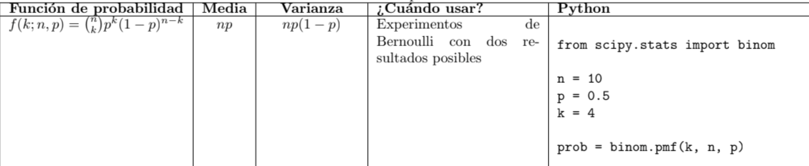
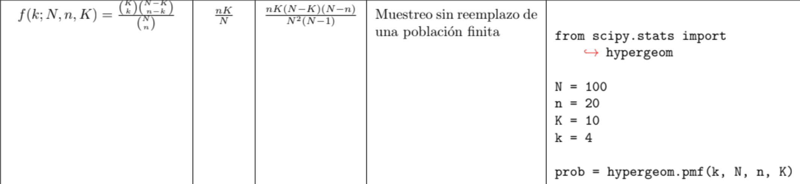
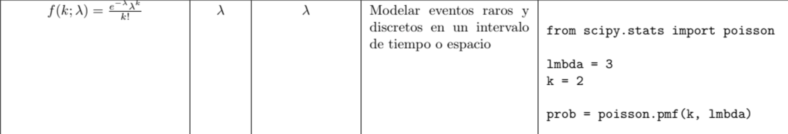
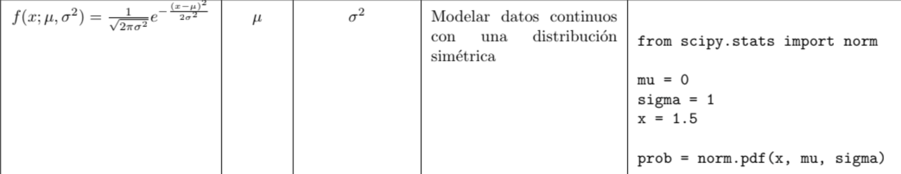

La función de probabilidad (o función de masa de probabilidad) es una función matemática que define la probabilidad de ocurrencia de cada uno de los posibles valores de una variable aleatoria discreta. Describe la probabilidad de cada resultado posible en un experimento aleatorio.
La distribución binomial es una distribución de probabilidad discreta que describe el número de éxitos en una secuencia de n ensayos independientes, donde cada ensayo tiene solo dos posibles resultados, generalmente éxito o fracaso, y la probabilidad de éxito es constante. Es útil para modelar fenómenos como lanzamientos de moneda, pruebas de productos, encuestas, etc.
La distribución hipergeométrica es una distribución de probabilidad discreta que describe el número de éxitos en una muestra aleatoria sin reemplazo de una población finita. A diferencia de la distribución binomial, en la hipergeométrica los ensayos no son independientes ya que la probabilidad de éxito cambia en cada ensayo. Se usa para modelar muestreos sin reemplazo de poblaciones finitas.
La distribución de Poisson es una distribución de probabilidad discreta que describe el número de eventos independientes que ocurren en un intervalo de tiempo o espacio dado, suponiendo que los eventos se producen a una tasa constante y de forma independiente. Se utiliza para modelar eventos raros, como fallas en un sistema, llegadas a una cola, etc.
La distribución normal, también conocida como distribución gaussiana, es una distribución de probabilidad continua simétrica en forma de campana. Es muy importante en estadística y se utiliza ampliamente en muchas áreas como modelado de variables aleatorias, procesos estocásticos, teoría de errores, etc.
La distribución t-Student es una distribución de probabilidad continua que se utiliza para hacer inferencias sobre la media de una población cuando el tamaño de la muestra es pequeño y la desviación estándar de la población es desconocida. Es una generalización de la distribución normal.
La distribución chi-cuadrado es una distribución de probabilidad continua que se utiliza para modelar la suma de los cuadrados de variables aleatorias normales independientes. Tiene múltiples aplicaciones en estadística, como en pruebas de bondad de ajuste, análisis de varianza, etc.
La distribución F, también conocida como distribución de Snedecor, es una distribución de probabilidad continua que se utiliza para modelar el cociente de dos variables aleatorias chi-cuadrado independientes divididas por sus respectivos grados de libertad. Se aplica en análisis de varianza, pruebas de hipótesis sobre varianzas, etc.